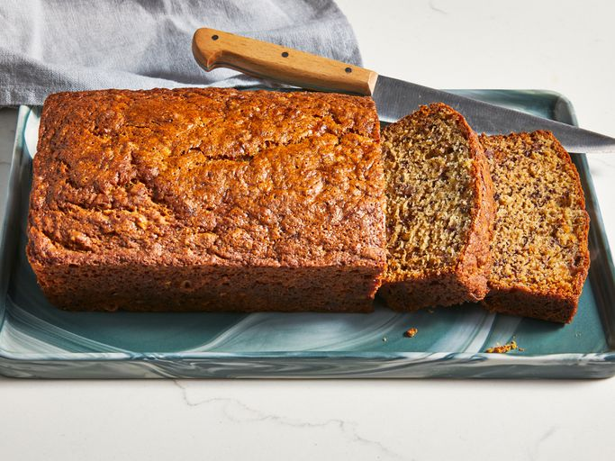

Banana Bread

Description
Banana bread is a type of sweet bread made from mashed bananas.
It is often a moist and sweet quick bread but some recipes are yeast raised.
Ingredients
- Three ripe, mashed bananas
- White sugar
- Egg
- Butter
- All-purpose flour
- Baking soda
- Salt
Steps
- Combine the dry ingredients in one bowl and wet ingredients in another.
- Stir the dry mixture into the wet mixture.
- Pour the batter into a prepared loaf pan and bake.